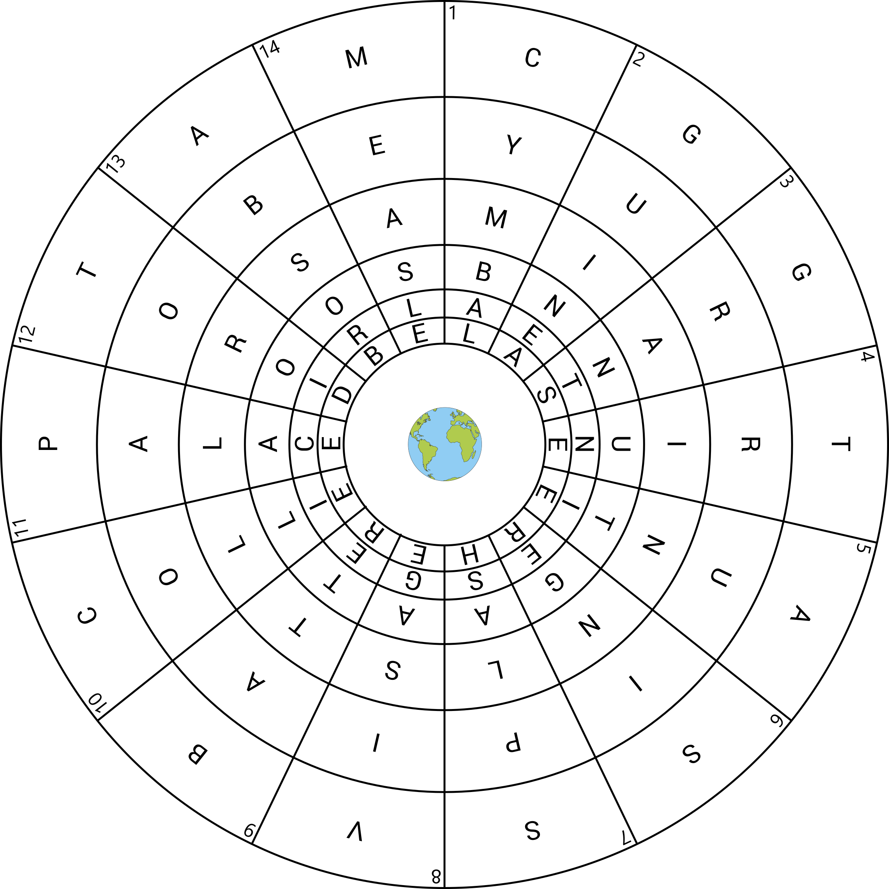
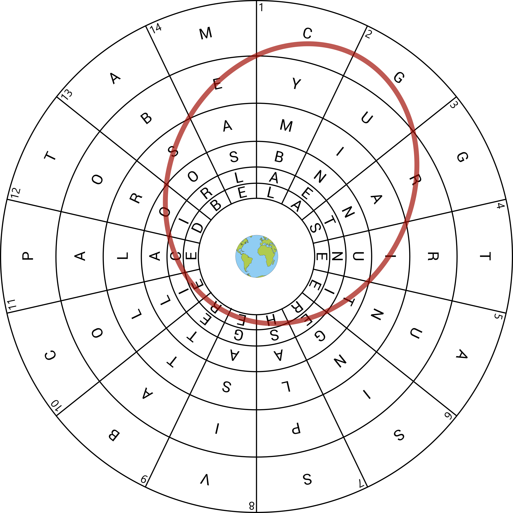

Solution: An Eccentric Crossword
Answer: GRAVITY
Written by Lennart Jansson
A crossword... in space! As suggested from the grid having the earth in the center, the “down” clues fall from the outside of the grid toward the center. Conveniently, there are 14 columns, and we can fill in the down clues in the given order.
| Half of a hi-hat | CYMBAL |
| Word with pig or fowl | GUINEA |
| Bestows | GRANTS |
| Three-in-one, theologically | TRIUNE |
| Mom’s sister | AUNTIE |
| Vocalist | SINGER |
| Quantity in a cocktail | SPLASH |
| Countenance | VISAGE |
| Fish coating, often with beer | BATTER |
| Sheepdog breed | COLLIE |
| Versailles sight | PALACE |
| Donut shape, in mathematics | TOROID |
| Soak up | ABSORB |
| Rubeola spot | MEASLE |
We can then fill in the grid:
To solve the puzzle we must also understand the “orbital” clues. As suggested by the title of the puzzle, the orbits are eccentric, that is, elliptical. Trying to read letters along various ellipse-shaped paths in the grid, we eventually find this shape:
...which, when read beginning at the R on the right side, spells RITE HERE COSEC [G], the answers to the first set of orbital clues, together with an extra letter. The other orbits have exactly the same shape, just rotated some number of grid spaces around the earth (and with words beginning in potentially different parts of the orbit). This means nearly all of the letters in the grid are used at least twice — once by an orbital light, and once by a down light. The innermost letters are triple-checked, since they end up being used by two different orbital lights. The exceptions are the single letters in each orbit which are unchecked — these provide extraction.
The answers to the orbital clues, along with the extra letter in each orbit, are:
| Religious ceremony | RITE | G |
| “Present!” | HERE | |
| Trig. function | COSEC | |
| Self-satisfied | SMUG | R |
| Bluefin, e.g. | TUNA | |
| Insatiable desire | GREED | |
| Speaks in a grating voice | RASPS | A |
| A 2-2 score, say | TIED | |
| One may be green, black, or pinto | BEAN | |
| Jai _____ | ALAI | V |
| Banjo player Fleck | BELA | |
| North African capital | TUNIS | |
| Smooth-talking | GLIB | I |
| Christmas song | CAROL | |
| Emit coherent light | LASE | |
| “Gallant” pig | BABE | T |
| Fortune tellers | SEERS | |
| At the summit of | ATOP | |
| Like half the planets in the solar system | INNER | Y |
| Back part of a shoe | HEEL | |
| Fertile soil | LOAM |
Reading the extra letters in clue order spells the answer, GRAVITY.
Author’s Notes
This was a puzzle whose core mechanic was inspired by the answer — when I wrote the puzzle and received the answer, I had heard from the puzzle editors that the intro round still didn’t have any puzzles involving a crossword grid so this was an attempt at putting an interesting twist on a crossword that is thematically related to the answer. (Also, space! It is the Galactic Puzzle Hunt after all.)
Even though the grid didn’t really feel overconstrained, I struggled for several hours one evening trying to fill the grid by hand. At some point I got totally frustrated and gave up, so I started trying to find a way to fill the grid with a computer program. The only crossword software I’d used before is Qxw, a free and open source program written by Mark Owen (who is also the creator of the Qat dictionary search tool, a favorite of puzzlehunt solving teams). To my surprise I found that Qxw indeed had several advanced features that I could use to set up all the lights and constraints of the eccentric crossword grid. First, I had to enable circular wrapping in the grid shape so words wouldn’t be bound by left or right edges of the grid. I made each row of the grid in Qxw correspond to an orbit in the puzzle, so I could add bars to the grid for separation of the three words in each orbit. This meant each of the down clues would have to be permuted rather than just taking the default down lights — but fortunately, Qxw has the ability to add “free lights” out of any arbitrary sequence of grid spaces, so I could set up each of the down lights to cross the orbits in the correct order. Lastly, since each adjacent pair of orbits shares two letters, I merged those shared letters into “merged cells” so they would be treated as a single cell by Qxw. With all of the constraints set up correctly, I was pleased to discover that Qxw had no trouble at all filling the grid. In fact, I was able to switch to a smaller wordlist, so that fewer of the words in the grid would be obscure words, and it was still able to compute a valid fill.
The moral of the story: Qxw is extremely powerful and can help construct even very strange crosswords!